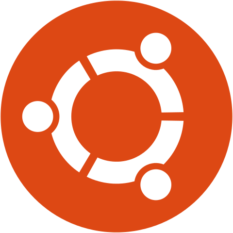

Браузеры:
 Google Chrome
Google Chrome
Браузер направлен на повышение безопасности, скорости и стабильности.
Главные особенности
• Многопроцессная архитектура.
Каждая открытая вкладка или окно являются отдельным процессом. Благодаря этому, вкладки или окна не мешают друг другу работать. Это практично и с точки зрения безопасности, ведь если злоумышленник получит удаленный доступ к какой-либо из вкладок, другие ему не будут доступны.
• Множество расширений.
Изобилие различных плагинов позволяет повысить эффективность и удобство использования браузера. Это создает массу дополнительных возможностей обычным пользователям и web-разработчикам. Их установка не составит труда, расширениями можно легко управлять и при необходимости активировать или отключать.
• Экономия трафика и скорость работы.
Уникальная технология сжатия данных обеспечивает высокую скорость загрузки страниц и экономит трафик. Это особенно актуально на мобильных устройствах, где зачастую количество интернет-трафика лимитировано. Для обеспечения высокой скорости работы, приложение наделено уникальными алгоритмами чтения кода JavaScript и упреждающего анализа DNS.
Безопасность в Google Chrome
В приложении реализована система черных списков для фишинговых сайтов и ресурсов с вирусными угрозами, при попытке посещения которых пользователь получает уведомления. Так же присутствует режим «инкогнито». В этом режиме даже не сохраняются cookie, уцелеют лишь загруженные пользователем файлы и добавленные закладки.
 Яндекс
Яндекс
В отличие от Google Chrome, разработчики Яндекс добавляют дополнительный функционал в созданный браузер.
Особенности браузера:
Яндекс.Браузер отлично подойдет каждому пользователю для быстрого поиска информации, просмотра видео-контента, прослушивания музыки и других развлечений. Наличие дополнительных расширений, постоянно появляющихся новшеств становится отличной альтернативой, как для профессиональных разработчиков, так и для простых пользователей.
 Opera
Opera
Впервые Opera появилась в 1994 году как исследовательская работа, но затем успешно переросла в профессиональный браузер. К 2011 году браузер Opera сумел войти во все мировые рейтинги браузеров, завоевав награды «Самый быстрый браузер», «Самый прогрессивный бесплатный браузер», «Лучшее программное обеспечение года». На данный момент оперой пользуются миллионы пользователей со всего мира.
Особенности браузера
• Группирование открытых вкладок.
Не секрет, что пользователи Chrome и других продуктов, созданных на его движке, жалуются на высокое потребление ресурсов компьютера. Из-за этого устройство начинает работать медленнее. Разработчикам Оперы удалось оптимизировать работу своей программы таким образом, чтобы она могла работать быстро и при этом не затрачивался минимум ресурсов компьютера.
• Управление при помощи жестов мыши.
Расширить функционал программы можно через собственный специализированный магазин расширений https://addons.opera.com/ru/extensions/. В нем содержится несколько тысяч сервисов, делающих работу с программой более удобной. Кроме того, пользователи Opera могут устанавливать и дополнения для браузера Chrome.
• Каталог дополнений для Оперы.
У браузера есть встроенный блокировщик рекламы, которая тормозит загрузку страниц. Также в магазине можно установить дополнительные расширения схожего функционала.
• Быстрый доступ к посещаемым сайтам.
Владельцы ноутбуков по достоинству оценят эту возможность. Ведь путешествуя, учась или находясь в рабочей поездке не всегда есть доступ к розетке. Энергосберегающий режим позволяет продлить время работы ноутбука почти в 1,5 раза. На некоторых моделях устройств это дополнительные 3 – 4 часа
• Синхронизация персональных данных на разных компьютерах.
Доступ на некоторые сайты в нашей стране закрыт и не всегда на это есть разумная причина. Браузер Opera обладает встроенным VPN расширением, которое позволяет попасть на заблокированные провайдером сайты. Функция эта бесплатная и проста в управлении.
• Автозаполнение полей.
Эта функция полезна при плохом интернет соединении. Активировав ее, пользователь будет получать данные из сети через специальные серверы. На них информация проходит сжатие и оптимизацию, после чего уже доставляется на компьютер. Весь этот процесс занимает считанные секунды, поэтому пользователь может наблюдать, как тормозящий сайт быстро загружается.
• Обмен данными с другими пользователями Opera.
У современного человека зачастую не хватает времени и приходится заниматься несколькими делами одновременно. Благодаря новому Opera можно смотреть видео в интернете, параллельно просматривая почту и социальные сети или работать с другим софтом.
Операционные Системы:
 Windows 10
Windows 10
Windows 10 - это операционная система для ПК, ноутбуков, планшетных и гибридных устройств с сенсорным экраном, консоли Xbox One и прочей компьютерной техники. Windows 10 – первая Windows со своими отдельными версиями.
Для кого предназначена
Она настолько универсальна, что подойдёт как геймерам, так и дизайнерам или программистам. Функциональность системы постоянно расширяется. Рекомендуется ознакомиться с виртуальными рабочими столами, буфером обмена и её горячими клавишами.
Полезные советы
К ним относится различные настройки системы и знакомство с новыми функциями. Некоторые из них уже пользователи используют каждый день. Например, обновлённый игровой режим, микшер громкости и много других фишек и советов Windows 10.
Твики системы
Непосредственно твики используются для тонкой настройки системы, решения проблем или исправления существующих ошибок. Это все остальные руководства, которые не вошли в наши категории (не учитывая стороннего программного обеспечения).
Ubuntu
Ubuntu — это операционная система, основанная на операционной системе Linux с открытым исходным кодом.
Преимущества:
1. Ubuntu бесплатен.
В отличие от Mac OS или Windows, вам не нужно платить за его использование.
2. Ubuntu может быть легко настроен.
Это гарантирует, что вы сможете использовать его точно в соответствии с вашими требованиями. Вы можете настроить каждый аспект пользовательского интерфейса, который гарантирует, что вы сможете сделать свою машину намного более эффективной.
3. Он может работать с флешки.
Вам не нужно устанавливать его для запуска. Вы можете просто загрузить его в накопитель и запустить его оттуда. Это также означает, что вы сможете носить свою операционную систему с собой куда угодно.
4. Хороший вариант для разработки.
Если вы программируете или кодируете, это один из лучших вариантов для вас. Он предоставляет вам довольно много опций по умолчанию, которые гарантируют, что вы сможете сразу же написать код. Текстовые редакторы, а также офисные пакеты, включены напрямую. Это означает, что вам не нужно устанавливать отдельные компиляторы или программное обеспечение в вашей ОС, чтобы начать кодирование.
5. Частые обновления.
Любая ошибка или уязвимость исправляются довольно быстро. Более того, с каждым обновлением у вас будет множество новых функций. Это поможет вам сделать вашу операционную систему более эффективной последовательно.
6. Виртуальные рабочие столы.
Ubuntu предлагает вам несколько рабочих столов, как на экране вашего смартфона. Вы можете переключаться между различными экранами, чтобы работать с другим программным обеспечением.
 RedOS
RedOS
РЕД ОС - это отечественная операционная система на базе Linux, призванная заменить зарубежные аналоги в государственных учреждения. Она отлично подойдет для рабочих станций и серверов, но вот на домашний компьютер, я бы точно не стал ее устанавливать.
РЕД ОС позволяет организовать доверительные отношения между создаваемой инфраструктурой на базе Samba DC, FreeIPA и существующим лесом Microsoft AD.
Основные возможности:
Антивирусные Программы:
 Антивирус Касперского
Антивирус Касперского
Преимущества
Недостатки
 Dr. Web
Dr. Web
Это кроссплатформенное (OS X, Linux, Windows) антивирусное программное обеспечение российских разработчиков для защиты от приложений-шуток, шпионских, троянских и рекламных программ, а также от хакерских утилит, червей и руткитов.
Особенности антивируса
• Возможность установки на инфицированный компьютер.
Благодаря особому алгоритму инсталляции, Dr.Web еще на стадии установки начинает сканирование файлов компьютера с использованием актуальных баз сигнатур вирусного программного обеспечения.
• Несигнатурный метод обнаружения.
Этот антивирус способен обнаруживать вредоносные программы даже в том случае, когда их еще нет в списках баз данных. Такое стало возможным благодаря особому эвристическому анализу, что делает защиту более эффективной.
• Хорошая поддержка.
Вследствие высокого уровня поддержки со стороны разработчиков, обновления баз происходит регулярно. Поддержка большого числа форматов архиваторов и упаковщиков. Эта способность антивирусной программы позволяет эффективно сканировать архивные массивы данных, где зачастую и скрыты вредоносные приложения.
• Технология Shield.
Модуль, реализованный в виде драйвера операционной системы, позволяет обнаруживать и обезвреживать зараженные объекты, которые находятся в библиотеках компонентов системы.
• Низкая ресурсозависимость.
Для стабильной работы антивируса не нужно много ресурсов компьютера. Потребляя небольшой объем оперативной памяти и не значительно нагружая процессор, Dr.Web будет очень актуален для владельцев старого «железа».
• Компактность.
Несмотря на внушительный список известных вирусов, база и обновления для баз весьма небольшого размера, это способствует более быстрой работе сканера.